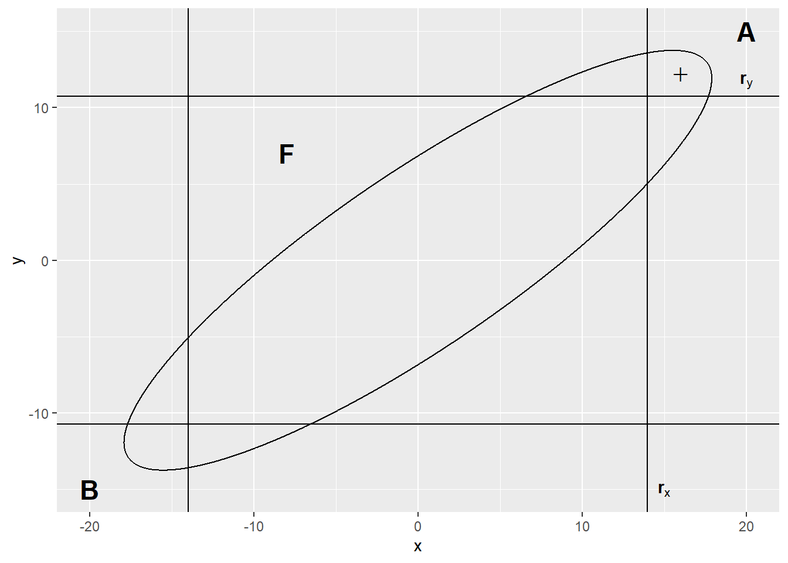

{kind=link}

3 Inferencia multivariante en poblaciones normales
Para la exploración de datos multivariantes, no empleamos modelos formales para dar respuestas a las preguntas formuladas, sin embargo, en algunas situaciones es posible ajustar modelos “formales” para probar una hipótesis sobre los parámetros de la función de densidad de probabilidad de esa población.
La función de densidad de probabilidad asumida casi universalmente como la base de las inferencias para los datos multivariantes es la normal multivariante.
En esta parte, nos apoyaremos en el libro “Nuevos Métodos de Análisis Multivariante” del profesor Carles M. Cuadras, catedrático de Estadística (1980-2009) y emérito (2009-2015) de la Universidad de Barcelona. Trabajaremos con la versión revisada en marzo de 2018, capítulos 2 y 3 (véase Cuadras 2014).
3.1 Distribuciones multivariantes
3.1.1 Distribución normal multivariante
3.1.1.1 Definición
Sea \(X\) una variable aleatoria con distribución \(N(\mu,\sigma^2)\), es decir, con media \(\mu\) y varianza \(\sigma^2\). La función de densidad es:
\[f(x;\mu,\sigma^2)=\frac{1}{\sigma\sqrt{2\pi}}e^{-\frac{1}{2}(x-\mu)^2/\sigma^2}=\frac{(\sigma^2)^{-1/2}}{\sqrt{2\pi}}e^{-\frac{1}{2}(x-\mu)^2/\sigma^2}. \tag{3.1}\]
Evidentemente se verifica
\[X=\mu+\sigma Y\quad\text{siendo}\quad Y\sim N(0,1), \tag{3.2}\]
donde el símbolo \(\sim\) significa “distribuido como”. Vamos a introducir la distribución normal multivariante \(N_p(\boldsymbol{\mu},\mathbf{\Sigma})\) como una generalización de la normal univariante. Por una parte, Ecuación 3.1 sugiere definir la densidad de \(\mathbf{X}=(X_1,\ldots,X_p)'\sim N_p(\boldsymbol{\mu},\mathbf{\Sigma})\) según
\[f(\mathbf{x};\boldsymbol{\mu},\mathbf{\Sigma})=\frac{|\mathbf{\Sigma}|^{-1/2}}{\left(\sqrt{2\pi}\right)^p}e^{-\frac{1}{2}(\mathbf{x}-\boldsymbol{\mu})'\mathbf{\Sigma}^{-1}(\mathbf{x}-\boldsymbol{\mu})}, \tag{3.3}\]
siendo \(\mathbf{x}=(x_1,\ldots,x_p)'\), \(\boldsymbol{\mu}=(\mu_1,\ldots,\mu_p)\) y \(\mathbf{\Sigma}=(\sigma_{ij})\) una matriz definida positiva, que como veremos, es la matriz de covarianzas. Por otra parte, Ecuación 3.2 sugiere definir la distribución \(\mathbf{X}=(X_1,\ldots,X_p)'\sim N_p(\boldsymbol{\mu},\mathbf{\Sigma})\) como una combinación lineal de \(p\) variables \(Y_1,\ldots,Y_p\) independientes con distribución \(N(0,1)\)
\[\begin{align*} X_1 & = & \mu_1+a_{11}Y_1&+\cdots+a_{1p}Y_p,\\ \vdots & & & \vdots \\ X_p & = & \mu_p+a_{p1}Y_1&+\cdots+a_{pp}Y_p, \end{align*} \tag{3.4}\]
que podemos escribir como
\[\mathbf{X}=\boldsymbol{\mu}+\mathbf{AY} \tag{3.5}\]
siendo \(\mathbf{Y}=(Y_1,\ldots,Y_p)'\) y \(A=(a_{ij})\) una matriz \(p\times p\) que verifica \(\mathbf{AA'}=\mathbf{\Sigma}\).
Proposición 3.1 Las dos definiciones Ecuación 3.3 y Ecuación 3.4 son equivalentes.
Prueba. Según la fórmula del cambio de variable
\[f_X(x_1,\ldots,x_p)=f_Y(y_1(x),\ldots,y_p(x))\left|\frac{\partial y}{\partial x}\right|,\]
Siendo \(y_i=y_i(x_1,\ldots,x_p),\ i=1,\ldots,p\), el cambio y \(J=\frac{\partial y}{\partial x}\) el jacobiano del cambio. De Ecuación 3.5 tenemos
\[\mathbf{y}=\mathbf{A}^{-1}(\mathbf{x}-\boldsymbol{\mu})\Rightarrow\left|\frac{\partial y}{\partial x}\right|=\left|\mathbf{A}^{-1}\right|\]
y como las \(p\) variable \(Y_i\) son \(N(0,1)\) independientes:
\[f_X(x_1,\ldots,x_p)=\left(1/\sqrt{2\pi}\right)^pe^{-\frac{1}{2}\sum^p_{i=1}y_i^2}|\mathbf{A}^{-1}|. \tag{3.6}\]
Pero \(\mathbf{\Sigma}^{-1}=(\mathbf{A}^{-1})'(\mathbf{A}^{-1})\) y por lo tanto
\[\mathbf{y'y}=(\mathbf{x}-\boldsymbol{\mu})'(\mathbf{A}^{-1})'(\mathbf{A}^{-1})(\mathbf{x}-\boldsymbol{\mu})=(\mathbf{x}-\boldsymbol{\mu})'(\mathbf{\Sigma}^{-1})(\mathbf{x}-\boldsymbol{\mu}). \tag{3.7}\]
Sustituyendo Ecuación 3.7 en Ecuación 3.6 y de \(|\mathbf{A}|^{-1}=|\mathbf{\Sigma}|^{-1/2}\) obtenemos Ecuación 3.3.
3.1.1.2 Propiedades
- De Ecuación 3.5 es inmediato que \(E(\mathbf{X})=\boldsymbol{\mu}\) y que la matriz de covarianzas es
\[E[(\mathbf{X}-\boldsymbol{\mu})(\mathbf{X}-\boldsymbol{\mu})']=E(\mathbf{AYY'A'})=\mathbf{AI}_p\mathbf{A'}=\mathbf{\Sigma}.\]
- La distribución de cada marginal \(X_i\) es normal multivariante:
\[X_i\sim N(\mu_i,\sigma_{ii}),\quad i=1,\ldots,p.\]
Es consecuencia de la definición Ecuación 3.4.
- La combinación lineal de todas las variables \(X_1,\ldots,X_p\)
\[Z=b_0+b_1X_1+\cdots+b_pX_p\]
es también normal univariante. En efecto, de Ecuación 3.4 resulta que \(Z\) es combinación lineal de \(N(0,1)\) independientes.
- Si \(\mathbf{\Sigma}=diag(\sigma_{11},\ldots,\sigma_{pp})\) es matriz diagonal, es decir, \(\sigma_{ij}=0,i\not=j\), entonces las variables \((X_1,\ldots,X_p)\) son estocásticamente independientes. En efecto, la función de densidad conjunta resulta igual al producto de las funciones de densidad marginales:
\[f(X_1,\ldots,x_p;\boldsymbol{\mu},\mathbf{\Sigma})=f( x_1;\mu_1,\sigma_{11})\times\cdots\times f(x_p;\mu_p,\sigma_{pp})\]
- La distribución de la forma cuadrática
\[U=(\mathbf{x}-\boldsymbol{\mu})'\mathbf{\Sigma}^{-1}(\mathbf{x}-\boldsymbol{\mu})\]
es ji-cuadrado con \(p\) grados de libertad. En efecto, de Ecuación 3.5 \(U=\mathbf{Y'Y}=\sum_{i=1}^pY_i^2\) es suma de los cuadrados de \(p\) variables \(N(0,1)\) independientes.
3.1.1.3 Caso bivariante
Cuando \(p=2\), la función de densidad de la normal bivariante se puede expresar en función de medias y varianzas \(\mu_1,\sigma^2_1,\mu_2,\sigma^2_2\) y del coeficiente de correlación \(\rho=cor(X_1,X_2)\):
\[\begin{align*} f(x_1,x_2) & =\frac{1}{2\pi\sigma_1\sigma_2\sqrt{1-\rho^2}}\\ & \times exp\left[-\frac{1}{2}\frac{1}{1-\rho^2}\left\{\frac{(x_1-\mu_1)^2}{\sigma^2_1}-2\rho\frac{(x_1-\mu_1)}{\sigma_1}\frac{(x_2-\mu_2)}{\sigma_2}+\frac{(x_2-\mu_2)^2}{\sigma^2_2}\right\}\right], \end{align*}\]
siendo \(-1<\rho<+1\) Figura 3.1. Se verifica:
- Hay independencia estocástica si y sólo si \(\rho=0\).
- La distribución de la variable marginal \(X_i\) es \(N(\mu_i,\sigma_i^2), i=1,2\).
- La función de densidad de \(X_2\) condicionada a \(X_1=x_1\) es
\[f(x_2|x_1)=\frac{1}{\sigma_2\sqrt{2\pi(1-\rho^2)}}exp\left\{-\frac{[x_2-\mu_2-\rho(\sigma_2/\sigma_1)(x_1-\mu_1)]^2}{2\sigma_2^2(1-\rho^2)}\right\}\]
densidad de la distribución normal \(N(\mu_2+\rho(\sigma_2/\sigma_1)(x_1-\mu_1),\sigma_2^2(1-\rho^2)).\)
- La regresión es de tipo lineal, es decir, las curvas de regresión de la media
\[x_2=E(X_2|X_1=x_1),\qquad x_1=E(X_1|X_2=x_2),\]
son las rectas de regresión.
3.1.2 Distribución de Wishart
La distribución de Wishart es la que sigue una matriz aleatoria simétrica definida positiva, generaliza la distribución ji-cuadrado y juega un papel importante en inferencia multivariante. Un ejemplo destacado lo constituye la distribución de la matriz de covarianzas \(\mathbf{S}\), calculada a partir de una matriz de datos donde las filas son observaciones normales multivariantes.
Definición 3.1 Si las filas de la matriz \(\mathbf{Z}_{n\times p}\) son independientes \(N_p(\mathbf{0},\mathbf{\Sigma})\) entonces diremos que la matriz \(\mathbf{Q}=\mathbf{Z'Z}\) es Wishart \(W_p(\mathbf{\Sigma},n)\), con parámetros \(\mathbf{\Sigma}\) y \(n\) grados de libertad. Cuando \(\mathbf{\Sigma}\) es definida positiva y \(n\ge p\), la densidad de \(\mathbf{Q}\) es
\[f(\mathbf{Q})=c|\mathbf{Q}|^{(n-p-1)}exp\left[-\frac{1}{2}tr(\mathbf{\Sigma})^{-1}\mathbf{Q}\right],\]
siendo
\[c^{-1}=2^{np/2}\pi^{p(p-1)/4}|\mathbf{\Sigma}|^{n/2}\prod_{i=1}^p\Gamma\left[\frac{1}{2}(n+1-i)\right].\]
Propiedades:
- Si \(\mathbf{Q}_1,\mathbf{Q}_2\) son independientes Wishart \(W_p(\mathbf{\Sigma},m),W_p(\mathbf{\Sigma},n)\), entonces la suma \(\mathbf{Q}_1+\mathbf{Q}_2\) también es Wishart \(W_p(\mathbf{\Sigma},m+n)\).
- Si \(\mathbf{Q}\) es \(W_p(\mathbf{\Sigma},n)\), y separamos las \(p\) variables en dos conjuntos de \(p_1\) y \(p_2\) variables, y consideramos las particiones correspondientes de \(\mathbf{\Sigma}\) y \(\mathbf{Q}\)
\[\mathbf{\Sigma}=\left( \begin{array}{cc} \mathbf{\Sigma}_{11} & \mathbf{\Sigma}_{12} \\ \mathbf{\Sigma}_{21} & \mathbf{\Sigma}_{22} \end{array} \right),\qquad \mathbf{Q}=\left( \begin{array}{cc} \mathbf{Q}_{11} & \mathbf{Q}_{12} \\ \mathbf{Q}_{21} & \mathbf{Q}_{22} \end{array} \right),\]
entonces \(\mathbf{Q}_{11}\) es \(W_{p_1}(\mathbf{\Sigma}_{11},n)\) y \(\mathbf{Q}_{22}\) es \(W_{p_2}(\mathbf{\Sigma}_{22},n)\).
- Si \(\mathbf{Q}\) es \(W_p(\mathbf{\Sigma},n)\), y \(\mathbf{T}\) es una matriz \(p\times q\) de constantes, entonces \(\mathbf{T'QT}\) es \(W_q(\mathbf{T'\Sigma T}, n)\). En particular, si \(\mathbf{t}\) es un vector, entonces
\[\frac{\mathbf{t'Qt}}{\mathbf{t'\Sigma t}}\sim\chi_n^2.\]
3.1.3 Distribución de Hotelling
Indiquemos por \(F^m_n\) la distribución F de Fisher-Snedecor, con \(m\) y \(n\) grados de libertad en el numerador y denominador, respectivamente. La distribución de Hotelling es una generalización multivariante de la distribución t de Student.
Definición 3.2 Si \(\mathbf{y}\) es \(N_p(\mathbf{0}, \mathbf{I})\), independiente de \(\mathbf{Q}\) que es Wishart \(W_p(\mathbf{I}, m)\), entonces
\[T^2 = m\mathbf{y'Q}^{-1}\mathbf{y}\]
sigue la distribución \(T^2\) de Hotelling, que se indica por \(T^2(p,m)\).
Propiedades:
- Si \(\mathbf{x}\) es \(N_p(\boldsymbol{\mu},\mathbf{\Sigma})\) independiente de \(\mathbf{M}\) que es \(W_p(\mathbf{\Sigma}, m)\), entonces
\[T^2 = m(\mathbf{x}-\boldsymbol{\mu})'\mathbf{M}^{-1}(\mathbf{x}-\boldsymbol{\mu})\sim T^2(p,m).\]
- \(T^2\) está directamente relacionada con la distribución F de Fisher-Snedecor
\[T^2(p,m)\equiv\frac{mp}{m-p+1}F^p_{m-p+1}.\]
- Si \(\mathbf{\overline{x}}, \mathbf{S}\) son el vector de medias y la matriz de covarianzas de la matriz \(\mathbf{X}_{n\times p}\) con filas independientes \(N_p(\boldsymbol{\mu},\mathbf{\Sigma})\), entonces
\[(n-1)(\mathbf{\overline{x}}-\boldsymbol{\mu})'\mathbf{S}^{-1}(\mathbf{\overline{x}}-\boldsymbol{\mu})\sim T^2(p,n-1)\]
y por lo tanto
\[\frac{n-p}{p}(\mathbf{\overline{x}}-\boldsymbol{\mu})'\mathbf{S}^{-1}(\mathbf{\overline{x}}-\boldsymbol{\mu})\sim F^p_{n-p}.\]
- Si \(\mathbf{\overline{x}}, \mathbf{S}_1, \mathbf{\overline{y}}, \mathbf{S}_2\) son el vector de medias y la matriz de covarianzas de las matrices \(\mathbf{X}_{n_1\times p}, \mathbf{Y}_{n_2\times p}\), respectivamente, con filas independientes \(N_p(\boldsymbol{\mu},\mathbf{\Sigma})\), y consideramos la estimación conjunta centrada (o insesgada) de \(\mathbf{\Sigma}\)
\[\mathbf{\widehat{S}}=(n_1\mathbf{S}_1+n_2\mathbf{S}_2)/(n_1+n_2-2),\]
entonces
\[T^2=\frac{n_1n_2}{n_1+n_2}(\mathbf{\overline{x}}-\mathbf{\overline{y}})'\mathbf{\widehat{S}}^{-1}(\mathbf{\overline{x}}-\mathbf{\overline{y}})\sim T^2(p,n_1+n_2-2)\]
y por lo tanto
\[\frac{n_1+n_2-1-p}{(n_1+n_2-2)p}T^2\sim F^p_{n_1+n_2-1-p}.\]
3.1.4 Distribución de Wilks
La distribución F con \(m\) y \(n\) grados de libertad surge considerando el cociente \[F=\frac{A/m}{B/n},\] donde \(A, B\) son ji-cuadrados estocásticamente independientes con \(m\) y \(n\) grados de libertad. Si consideramos la distribución
\[\Lambda = \frac{A}{A+B},\]
la relación entre \(\Lambda\) y \(F^m_n\), así como la inversa \(F^n_m\), es
\[F^m_n=\frac{n}{m}\frac{\Lambda}{1-\Lambda},\qquad F^m_n=\frac{m}{n}\frac{1-\Lambda}{\Lambda}.\]
La distribución de Wilks generaliza esta relación.
Definición 3.3 Si las matrices \(\mathbf{A}, \mathbf{B}\) de orden \(p\times p\) son independientes Wishart \(W_p(\mathbf{\Sigma}, m), W_p(\mathbf{\Sigma}, n)\), respectivamente, con \(m\ge p\), la distribución del cociente de determinantes
\[\Lambda = \frac{|\mathbf{A}|}{|\mathbf{A}+\mathbf{B}|}\]
es, por definición, la distribución lambda de Wilks, que indicaremos por \(\Lambda(p,m,n)\).
Propiedades:
\(0\le\Lambda\le1\) y además \(\Lambda\) no depende de \(\mathbf{\Sigma}\). Por lo tanto, podemos estudiarla suponiendo \(\mathbf{\Sigma}=\mathbf{I}\).
Su distribución es equivalente a la del producto de \(n\) variables beta independientes:
\[\Lambda(p,m,n)=\prod_{i=1}^nU_i,\]
donde \(U_i\) es beta \(B\left(\frac{1}{2}(m+i-p),\frac{1}{2}p\right)\). (Obsérvese que debe ser \(m\ge p\)).
Los parámetros se pueden permutar manteniendo la misma distribución. Concretamente: \(\Lambda(p, m, n)\sim\Lambda(n,m+n-p,p)\).
Para valores 1 y 2 de \(p\) y \(n\); la distribución de \(\Lambda\) equivale a la distribución F, según las fórmulas:
\[\begin{align*} & \frac{1-\Lambda}{\Lambda}\frac{m}{n} & \sim\ & F^n_m & (p=1)\\ & \frac{1-\Lambda}{\Lambda}\frac{m-p+1}{p} & \sim\ & F^p_{m-p+1} & (n=1)\\ & \frac{1-\sqrt{\Lambda}}{\sqrt{\Lambda}}\frac{m-1}{n} & \sim\ & F^{2n}_{2(m-1)} & (p=2)\\ & \frac{1-\sqrt{\Lambda}}{\sqrt{\Lambda}}\frac{m-p+1}{p} & \sim\ & F^{2p}_{2(m-p+1)} & (n=2) \end{align*} \tag{3.8}\]
- En general, una transformación de \(\Lambda\) equivale, exacta o asintóticamente, a la distribución F. Si \(\Lambda(p,n-q,q)\) es Wilks con \(n\) relativamente grande, consideremos
\[F=\frac{ms-2\lambda}{pq}\frac{1-\Lambda^{1/s}}{\Lambda^{1/s}} \tag{3.9}\]
con \(m=n-(p+q+1)/2,\lambda=(pq-2)/4,s=\sqrt{(p^2q^2-4)/(p^2+q^2-5)}\). Entonces \(F\) sigue asintóticamente la distribución F con \(pq\) y \((ms-2\lambda)\) grados de libertad.
3.1.5 Relaciones entre Wilks, Hotelling y F
A. Probemos la relación entre \(\Lambda\) y \(F\) cuando \(p=1\): Sean \(A\sim\chi^2_m,B\sim\chi^2_n\) independientes. Entonces \(\Lambda=A/(A+B)\sim\Lambda(1,m,n)\) y \(F=(n/m)A/B=(n/m)\overline{F}\sim F^m_n\). Tenemos que \(\Lambda=(A/B)/(A/B+1)=\overline{F}(1+\overline{F})\), luego \(\overline{F}=\Lambda(1-\Lambda)\Rightarrow(n/m)\Lambda/(1-\Lambda)\sim F^m_n\). Mas si \(f\sim F^m_n\) entonces \(1/F\sim F^n_m\). Hemos demostrado que
\[\frac{1-\Lambda(1,m,n)}{\Lambda(1,m,n)}\frac{m}{n}\sim F^n_m \tag{3.10}\]
B. Recordemos que \(\mathbf{y}\) es un vector columna y por lo tanto \(\mathbf{yy'}\) es una matriz \(p\times p\). Probemos la relación entre las distribuciones \(T^2\) y \(F\). Tenemos \(T^2=m\mathbf{y'Q}^{-1}\mathbf{y}\), donde \(\mathbf{Q}\) es \(W_p(\mathbf{I},m)\), y \(\mathbf{yy'}\) es \(W_p(\mathbf{I},1)\). Se cumple
\[|\mathbf{Q}+\mathbf{yy'}|=|\mathbf{Q}||1+\mathbf{y'Q}^{-1}\mathbf{y}|,\]
que implica
\[1+\mathbf{y'Q}^{-1}\mathbf{y}=|\mathbf{Q}+\mathbf{yy'}|/|\mathbf{Q}|=1/\Lambda,\]
donde \(\Lambda=|\mathbf{Q}|/|\mathbf{Q}+\mathbf{yy'}|=\Lambda(p,m,1)=\Lambda(1,m+1-p,p)\). Además, \(\mathbf{y'Q}^{-1}\mathbf{y}=1/\Lambda-1=(1-\Lambda)/\Lambda\). De Ecuación 3.10 tenemos que \(\mathbf{y'Q}^{-1}\mathbf{y}(m+1-p)=F^p_{m+1-p}\) y por lo tanto
\[T^2=m\mathbf{y'Q}^{-1}\mathbf{y}=\frac{mp}{m+1-p}F^p_{m+1-p}.\]
3.1.6 Distribución multinomial
Supongamos que la población es la reunión disjunta de \(k\) sucesos excluyentes \(A_1,\ldots,A_k\),
\[\Omega=A_1+\cdots+A_k,\]
con probabilidades positivas \(P(A_1)=p_1,\ldots,P(A_k)=p_k\); verificando
\[p_1+\cdots+p_k=1.\]
Consideremos \(n\) observaciones independientes y sea \((f_1,\ldots,f_k)\) el vector con las frecuencias observadas de \(A_1,\ldots,A_k\), siendo
\[f_1+\cdots+f_k=n. \tag{3.11}\]
La distribución multinomial es la distribución de \(\mathbf{f}=(f_1,\ldots,f_k)\) con función de densidad discreta
\[f(f_1,\ldots,f_k) = \frac{n!}{f_1!\cdots f_k!}p_1^{f_1}\cdots p_k^{f_k}.\]
En el caso \(k = 2\) tenemos la distribución binomial.
Indiquemos \(\mathbf{p}=(p_1,\ldots,p_k)'\). 1. El vector de medias de \(\mathbf{f}\) es \(\boldsymbol{\mu}=n\mathbf{p}\). 2. La matriz de covarianzas de \(\mathbf{f}\) es \(\mathbf{C} = n[diag(\mathbf{p})-\mathbf{pp'}]\). Es decir:
\[\begin{align*} c_{ii} & = np_i(1-p_i),\\ c_{ij} & = -p_ip_j\qquad \text{si } i\not=j. \end{align*}\]
Puesto que \(\mathbf{C1}=\mathbf{0}\), la matriz \(\mathbf{C}\) es singular. La singularidad se debe a que se verifica Ecuación 3.11. Una g-inversa de C es:
\[\mathbf{C}^-=\frac{1}{n}diag(p_1^{-1},\ldots,p_k^{-1}). \tag{3.12}\]
Puesto que \(\mathbf{C}(\mathbf{I}-\mathbf{11'})=\mathbf{C}\), es fácil ver que otra g-inversa es
\[\mathbf{C}^-=\frac{1}{n}diag(p_1^{-1},\ldots,p_k^{-1})(\mathbf{I}-\mathbf{11'}).\]
3.2 Distribuciones con marginales dadas (OPCIONAL)
Sea \(H(x,y)\) la función de distribución bivariante de dos variables aleatorias \((X,Y)\). La función \(H\) es
\[H(x,y) = P(X\le x,Y\le y).\]
Consideremos las distribuciones marginales, es decir, las distribuciones univariantes de \(X,Y\):
\[\begin{align*} F(x) & = P(X\le x) = H(x,\infty),\\ G(y) & = P(Y\le y) = H(\infty,y). \end{align*}\]
Un procedimiento para la obtención de modelos de distribuciones bivariantes consiste en encontrar \(H\) a partir de \(F,G\) y posiblemente algún parámetro. Si suponemos \(X,Y\) independientes, una primera distribución es
\[H^0(x,y)=F(x)G(y).\]
M. Fréchet introdujo las distribuciones bivariantes
\[\begin{align*} H^-(x,y) & = max\{F(x)+G(y)-1,0\}, \\ H^+(x,y) & = min\{F(x),G(y)\}, \end{align*}\]
y demostró la desigualdad
\[H^-(x,y)\le H(x,y)\le H^+(x,y).\]
Cuando la distribución es \(H^-\), entonces se cumple la relación funcional entre \(X, Y\)
\[F(X)+G(Y)=1,\]
y la correlación entre \(X,Y\) (si existe) \(\rho^-\) es mínima. Cuando la distribución es \(H^+\), entonces se cumple la relación funcional entre \(X,Y\)
\[F(X)=G(Y),\]
y la correlación entre X; Y (si existe) \(\rho^+\) es máxima. Previamente W. Hoeffding había probado la siguiente formula para la covarianza
\[cov(X,Y)=\int_{\mathbb{R}^2}[H(x,y)-F(x)G(y)]dxdy,\]
y demostrado la desigualdad
\[\rho^-\le\rho\le\rho^+,\]
donde \(\rho^-,\rho\) y \(\rho^+\) son las correlaciones entre \(X,Y\) cuando la distribución bivariante es \(H^-,H\) y \(H^+\) , respectivamente.
Posteriormente, diversos autores han propuesto distribuciones bivariantes paramétricas a partir de las marginales F; G, que en algunos casos contienen a \(H^-,H^0\) y \(H^+\). Escribiendo \(F,G,H\) para indicar \(F(x),G(y),H(x,y)\), algunas familias son:
Farlie-Gumbel-Morgenstern: \[H_\theta = FG[1+\theta(1-F)(1-G)],\quad-1\le\theta\le1.\]
Clayton-Oakes: \[H_\alpha=[max(F^{-\alpha}+G^{-\alpha}-1,0]^{-1/\alpha},\quad-1\le\alpha\le\infty.\]
Ali-Mikhail-Haq: \[H_\theta = FG/[1-\theta(1-F)(1-G)],\quad-1\le\theta\le1.\]
Cuadras-Augé: \[H_\theta=(min\{F,G\})^\theta(FG)^{1-\theta},\quad0\le\theta\le1.\]
Familia de corrección \[H_\theta(x,y) = \theta F(min\{x,y\})+(1-\theta)F(x)J(y),\quad-1\le\theta\le1.\]
siendo \(J(y)=[G(y)-\theta F(y)]/(1-\theta)\) una función de distribución univariante.
3.3 Introducción a la inferencia multivariante
Para la exploración de datos multivariantes, no se suelen emplear modelos formales para dar respuestas a las preguntas formuladas, sin embargo, en algunas situaciones es posible ajustar modelos “formales” para probar una hipótesis sobre los parámetros de la función de densidad de probabilidad de esa población. La función de densidad de probabilidad asumida casi universalmente como la base de las inferencias para los datos multivariantes es la normal multivariante.
3.3.1 Conceptos básicos
Sea \(f(x,\boldsymbol{\theta})\) un modelo estadístico. La función “score” se define como
\[\mathbf{z}(\mathbf{x},\boldsymbol{\theta})=\frac{\partial}{\partial\boldsymbol{\theta}}log\: f(\mathbf{x},\boldsymbol{\theta}).\]
Una muestra multivariante está formada por las \(n\) filas \(\mathbf{x}_1',\ldots,\mathbf{x}_n'\) independientes de una matriz de datos \(\mathbf{X}_{n\times p}\): La función de verosimilitud es
\[L(\mathbf{X},\boldsymbol{\theta})=\prod_{i=1}^nf(x_i,\boldsymbol{\theta}).\]
La función “score” de la muestra es
\[\mathbf{z}(\mathbf{X},\boldsymbol{\theta})=\sum_{i=1}^n\:\frac{\partial}{\partial\boldsymbol{\theta}}log\:f(x_i,\boldsymbol{\theta}).\]
La matriz de información de Fisher \(F(\boldsymbol{\theta})\) es la matriz de covarianzas de \(\mathbf{z}(\mathbf{X},\boldsymbol{\theta})\). Cuando un modelo estadístico es regular se verifica:
\[\text{a) }E[\mathbf{z}(\mathbf{X},\boldsymbol{\theta})]=\mathbf{0},\quad \text{b) }F(\boldsymbol{\theta})=E[\mathbf{z}(\mathbf{X},\boldsymbol{\theta})\mathbf{z}(\mathbf{X},\boldsymbol{\theta})'].\]
Un estimador \(\mathbf{t}(\mathbf{X})\) de \(\boldsymbol{\theta}\) es insesgado si \(E[\mathbf{t}(\mathbf{X})]=\boldsymbol{\theta}\). La desigualdad de Cramér-Rao dice que si \(cov(\mathbf{t}(\mathbf{X}))\) es la matriz de covarianzas de \(\mathbf{t}(\mathbf{X})\), entonces
\[cov(\mathbf{t}(\mathbf{X}))\ge F(\boldsymbol{\theta})^{-1},\]
en el sentido de que la diferencia \(cov(\mathbf{t}(\mathbf{X}))-F(\boldsymbol{\theta})^{-1}\) es una matriz semidefinida positiva.
Un estimador \(\widehat{\boldsymbol{\theta}}\) del parámetro desconocido \(\boldsymbol{\theta}\) es máximo verosímil si maximiza la función \(L(\mathbf{X},\boldsymbol{\theta})\). En condiciones de regularidad, podemos obtener \(\widehat{\boldsymbol{\theta}}\) resolviendo la ecuación
\[\sum_{i=1}^n\:\frac{\partial}{\partial\boldsymbol{\theta}}log\:f(x_i,\boldsymbol{\theta})=\mathbf{0}\]
Entonces el estimador máximo verosímil \(\widehat{\boldsymbol{\theta}}_n\) obtenido a partir de una muestra de tamaño \(n\) satisface:
Es asintóticamente normal con vector de medias \(\boldsymbol{\theta}\) y matriz de covarianzas \((nF_1(\boldsymbol{\theta}))^{-1}\), donde \(F_1(\boldsymbol{\theta})\) es la matriz de información de Fisher para una sola observación.
Si \(\mathbf{t}(\mathbf{X})\) es estimador insesgado de \(\boldsymbol{\theta}\) tal que \(cov(\mathbf{t}(\mathbf{X}))=(nF_1(\boldsymbol{\theta}))^{-1}\), entonces \(\widehat{\boldsymbol{\theta}}_n=\mathbf{t}(\mathbf{X})\).
\(\widehat{\boldsymbol{\theta}}_n\) converge en probabilidad a \(\boldsymbol{\theta}\).
3.3.2 Estimación de medias y covarianzas
Si las \(n\) filas \(\mathbf{x}_1',\ldots,\mathbf{x}_n'\) de \(\mathbf{X}_{n\times p}\) son independientes \(N_p(\boldsymbol{\mu},\mathbf{\Sigma})\) la función de verosimilitud es
\[L(\mathbf{X},\boldsymbol{\mu},\mathbf{\Sigma})=det(2\pi\mathbf{\Sigma})^{-n/2}exp\left\{-\frac{1}{2}\sum_{i=1}^n(x_i-\boldsymbol{\mu})'\mathbf{\Sigma}^{-1}(x_i-\boldsymbol{\mu})\right\}.\]
Sea \(\mathbf{b}_i=\mathbf{x}_i-\overline{\mathbf{x}}\). Se verifica
\[\begin{align*} \sum_{i=1}^n(\mathbf{x}_i-\boldsymbol{\mu})'\mathbf{\Sigma}^{-1}(\mathbf{x}_i-\boldsymbol{\mu}) & =\sum_{i=1}^n\mathbf{d}_i'\mathbf{\Sigma}^{-1}\mathbf{d}_i+n(\mathbf{x}_i-\boldsymbol{\mu})'\mathbf{\Sigma}^{-1}(\mathbf{x}_i-\boldsymbol{\mu})\\ &=tr\left[\mathbf{\Sigma}^{-1}\sum_{i=1}^n\mathbf{d}_i\mathbf{d}_i'\right]+n(\mathbf{x}_i-\boldsymbol{\mu})'\mathbf{\Sigma}^{-1}(\mathbf{x}_i-\boldsymbol{\mu}). \end{align*}\]
Por la tanto el logaritmo de \(L\) se puede expresar como
\[log\ L(\mathbf{X},\boldsymbol{\mu},\mathbf{\Sigma})=-\frac{n}{2}log\ det(2\pi\mathbf{\Sigma})-\frac{n}{2}tr(\mathbf{\Sigma}^{-1}\mathbf{S})-\frac{n}{2}(\overline{\mathbf{x}}-\boldsymbol{\mu})'\mathbf{\Sigma}^{-1}(\overline{\mathbf{x}}-\boldsymbol{\mu}).\]
Derivando matricialmente respecto de \(\boldsymbol{\mu}\) y de \(\mathbf{\Sigma}^{-1}\) tenemos
\[\begin{align*} & \frac{\partial}{\partial\boldsymbol{\mu}}log\ L & =\ & n\mathbf{\Sigma}^{-1}(\overline{\mathbf{x}}-\boldsymbol{\mu})=\mathbf{0},\\ & \frac{\partial}{\partial\mathbf{\Sigma}^{-1}}log\ L & =\ & \frac{n}{2}[\mathbf{\Sigma}-\mathbf{S}-(\overline{\mathbf{x}}-\boldsymbol{\mu})(\overline{\mathbf{x}}-\boldsymbol{\mu})']=\mathbf{0}. \end{align*}\]
Las estimaciones máximo-verosímiles de \(\boldsymbol{\mu},\mathbf{\Sigma}\) son pues
\[\widehat{\boldsymbol{\mu}}=\overline{\mathbf{x}},\quad\widehat{\mathbf{\Sigma}}=\mathbf{S}.\]
Sin embargo \(\mathbf{S}\) no es estimador insesgado de \(\mathbf{\Sigma}\). La estimación centrada es \(\widehat{\mathbf{S}} = \mathbf{X}'\mathbf{HX}/(n-1)\).
Si solo \(\boldsymbol{\mu}\) es desconocido, la matriz de información de Fisher es
\[F(\boldsymbol{\mu})=E\left[n\mathbf{\Sigma}^{-1}(\overline{\mathbf{x}}-\boldsymbol{\mu})n\Sigma^{-1}(\overline{\mathbf{x}}-\boldsymbol{\mu})'\right]=n\mathbf{\Sigma}^{-1},\]
y como \(cov(\overline{\mathbf{x}})=\mathbf{\Sigma}/n\), tenemos que \(\overline{\mathbf{x}}\) alcanza la cota de Cramér-Rao.
Probaremos más adelante que:
- \(\overline{\mathbf{x}}\) es \(N_p(\boldsymbol{\mu},\mathbf{\Sigma}/n)\).
- \(\overline{\mathbf{x}}\) y \(\mathbf{S}\) son estocásticamente independientes.
- \(n\mathbf{S}\) sigue la distribución de Wishart.
3.4 Contraste de hipótesis multivariantes
Un primer método para construir contrastes sobre los parámetros de una población normal, se basa en las propiedades anteriores, que dan lugar a estadísticos con distribución conocida (ji-cuadrado, F).
3.4.1 Test sobre la media: una población
Supongamos que las filas de \(\mathbf{X}_{n\times p}\) son independientes \(N_p(\boldsymbol{\mu},\mathbf{\Sigma})\). Sea \(\boldsymbol{\mu}_0\) un vector de medias conocido. Queremos realizar un test sobre la hipótesis
\[H_0:\boldsymbol{\mu}=\boldsymbol{\mu}_0\]
- Si \(\mathbf{\Sigma}\) es conocida, como \(\overline{\mathbf{x}}\) es \(N_p(\boldsymbol{\mu},\mathbf{\Sigma}/n)\), el estadístico de contraste es
\[n(\overline{\mathbf{x}}-\boldsymbol{\mu}_0)'\Sigma^{-1}(\overline{\mathbf{x}}-\boldsymbol{\mu}_0)\sim\chi^2_p.\]
- Si \(\mathbf{\Sigma}\) es desconocida, como \((n-1)(\overline{\mathbf{x}}-\boldsymbol{\mu})'\mathbf{S}^{-1}(\overline{\mathbf{x}}-\boldsymbol{\mu})\sim T^2(p,n-1)\), el estadístico de contraste es
\[\frac{n-p}{n}(\overline{\mathbf{x}}-\boldsymbol{\mu}_0)'\mathbf{S}^{-1}(\overline{\mathbf{x}}-\boldsymbol{\mu}_0)\sim F^p_{n-p}.\] {#eq-13}
En ambos casos se rechaza \(H_0\) para valores grandes significativos del estadístico.
3.4.2 Test sobre la media: dos poblaciones
Supongamos ahora que tenemos dos matrices de datos independientes \(\mathbf{X}_{n_1\times p},\mathbf{Y}_{n_2\times p}\) que provienen de distribuciones \(N_p(\boldsymbol{\mu}_1,\mathbf{\Sigma}),N_p(\boldsymbol{\mu}_2,\mathbf{\Sigma})\). Queremos construir un test sobre la hipótesis
\[H_0:\boldsymbol{\mu}_1=\boldsymbol{\mu}_2.\]
- Si \(\mathbf{\Sigma}\) es conocida, como \((\overline{\mathbf{x}}-\overline{\mathbf{y}})\) es \(N_p(\boldsymbol{\mu}_1-\boldsymbol{\mu}_2,(1/n_1+1/n_2)\mathbf{\Sigma})\) el estadístico de contraste es
\[\frac{n_1n_2}{n_1+n_2}(\overline{\mathbf{x}}-\overline{\mathbf{y}})'\Sigma^{-1}(\overline{\mathbf{x}}-\overline{\mathbf{y}})\sim\chi^2_p.\]
- Si \(\mathbf{\Sigma}\) es desconocida, el estadístico de contraste es
\[\frac{n_1+n_2-1-p}{(n_1+n_2-2)p}\frac{n_1n_2}{n_1+n_2}(\overline{\mathbf{x}}-\overline{\mathbf{y}})'\widehat{\mathbf{S}}^{-1}(\overline{\mathbf{x}}-\overline{\mathbf{y}})\sim F^p_{n_1+n_2-1-p}.\]
Siendo \(\widehat{\mathbf{S}}=(n_1\mathbf{S}_1+n_2\mathbf{S}_2)/(n_1+n_2-2)\) la estimación centrada (es decir, insesgada) de \(\mathbf{\Sigma}\).
3.4.3 Comparación de varias medias
Supongamos que las filas de \(g\) matrices de datos son independientes, y -que provienen de la observación de \(g\) poblaciones normales multivariantes:
| matriz | orden | media | covarianza | distribución |
|---|---|---|---|---|
| \(\mathbf{X}_1\) | \(n_1\times p\) | \(\overline{\mathbf{x}}_1\) | \(\mathbf{S}_1\) | \(N_p(\boldsymbol{\mu}_1,\mathbf{\Sigma})\) |
| \(\mathbf{X}_2\) | \(n_2\times p\) | \(\overline{\mathbf{x}}_2\) | \(\mathbf{S}_2\) | \(N_p(\boldsymbol{\mu}_2,\mathbf{\Sigma})\) |
| \(\vdots\) | \(\vdots\) | \(\vdots\) | \(\vdots\) | \(\vdots\) |
| \(\mathbf{X}_g\) | \(n_g\times p\) | \(\overline{\mathbf{x}}_g\) | \(\mathbf{S}_g\) | \(N_p(\boldsymbol{\mu}_g,\mathbf{\Sigma})\) |
El vector de medias generales y la estimación centrada (o insesgada) de la matriz de covarianzas común \(\mathbf{\Sigma}\) son
\[\overline{\mathbf{x}}=\frac{1}{n}\sum_{i=1}^gn_i\overline{\mathbf{x}}_i,\quad \widehat{\mathbf{S}}=\frac{1}{n-g}\sum_{i=1}^gn_i\mathbf{S}_i,\]
siendo \(\mathbf{S}_i=n_i^{-1}\mathbf{X}_i'\mathbf{HX}_i\) y \(n=\sum_{i=1}^gn_i\).
Deseamos construir un test para decidir si podemos aceptar la hipótesis de igualdad de medias
\[H_0:\boldsymbol{\mu}_1=\boldsymbol{\mu}_2=\cdots=\boldsymbol{\mu}_g.\]
Introduciremos las siguientes matrices:
\[\begin{align*} \mathbf{B}=\ & \sum_{i=1}^gn_i(\overline{\mathbf{x}}_i-\overline{\mathbf{x}})(\overline{\mathbf{x}}_i-\overline{\mathbf{x}})'\quad & (\text{dispersión entre grupos})\\ \mathbf{W}=\ & \sum_{i=1}^g\sum_{\alpha=1}^{n_i}(\mathbf{x}_{i\alpha}-\overline{\mathbf{x}}_i)(\mathbf{x}_{i\alpha}-\overline{\mathbf{x}}_i)'\quad & (\text{dispersión dentro grupos})\\ \mathbf{T}=\ & \sum_{i=1}^g\sum_{\alpha=1}^{n_i}(\mathbf{x}_{i\alpha}-\overline{\mathbf{x}})(\mathbf{x}_{i\alpha}-\overline{\mathbf{x}})'\quad & (\text{dispersión total}) \end{align*}\]
Se verifica que \(\mathbf{W}=(n-g)\widehat{\mathbf{S}}\) y la relación:
\[\mathbf{T}=\mathbf{B}+\mathbf{W}.\]
Si la hipótesis nula es cierta, se verifica además
\[\begin{align*} & \mathbf{B}\sim W_p(\mathbf{\Sigma},g-1),\ \mathbf{W}\sim W_p(\mathbf{\Sigma},n-g),\ \mathbf{T}\sim W_p(\mathbf{\Sigma},n-1),\\ & \mathbf{B},\mathbf{W}\text{ son estocásticamente independientes.} \end{align*}\]
Por lo tanto, si \(H_0\) es cierta
\[\Lambda=\frac{|\mathbf{W}|}{|\mathbf{W}+\mathbf{B}|}\sim\Lambda(p,n-g,n-1).\]
Rechazaremos \(H_0\) si \(\Lambda\) es un valor pequeño y significativo, o si la transformación a una \(F\) es grande y significativa.
3.4.4 Teorema de Cochran
Algunos resultados de la sección anterior son una consecuencia del Teorema 3.1, conocido como teorema de Cochran.
Lema 3.1 Sea \(\mathbf{X}(n\times p)\) una matriz de datos \(N_p(\boldsymbol{\mu},\mathbf{\Sigma})\) y \(\mathbf{u}\), \(\mathbf{v}\) dos vectores \(n\times1\) tales que \(\mathbf{u}'\mathbf{u}=\mathbf{v}'\mathbf{v}=1\), \(\mathbf{u}'\mathbf{v}=0\).
- Si \(\boldsymbol{\mu}=\mathbf{0}\) entonces \(\mathbf{y}'=\mathbf{u}'\mathbf{X}\) es \(N_p(\mathbf{0},\mathbf{\Sigma})\).
- \(\mathbf{y}'=\mathbf{u}'\mathbf{X}\) es independiente de \(\mathbf{z}'=\mathbf{v}'\mathbf{X}\)
Prueba. Sean \(\mathbf{x}_1',\ldots,\mathbf{x}_n'\) las filas (independientes) de \(\mathbf{X}\). Si \(\mathbf{u}=(u_1,\ldots,u_n)'\) entonces \(\mathbf{y}'=\mathbf{u}'\mathbf{X}=\sum_{i=1}^nu_i\mathbf{x_i}\) es normal multivariante con \(\boldsymbol{\mu}=\mathbf{0}\) y matriz de covarianzas
\[\begin{align*} E(\mathbf{y}\mathbf{y}') & =\ E\left(\sum_{i=1}^nu_i\mathbf{x}_i\right)\left(\sum_{i=1}^nu_i\mathbf{x}_i\right)'=E\left(\sum_{i,j=1}^nu_iu_j\mathbf{x}_i\mathbf{x}_j'\right)\\ & =\ \sum_{i,j=1}^nu_iu_jE\left(\mathbf{x}_i\mathbf{x}_j'\right)=\sum_{i=1}^nu_i^2E\left(\mathbf{x}_i\mathbf{x}_i'\right)\\ & =\ \sum_{i=1}^nu_i^2\mathbf{\Sigma}=\mathbf{\Sigma}. \end{align*}\]
Análogamente, si \(\mathbf{v}=(v_1,\ldots,v_n)'\), \(\mathbf{z}'=\mathbf{v}'\mathbf{X}\) es también normal.
Las esperanzas de \(\mathbf{y}\), \(\mathbf{z}\) son: \(E(\mathbf{y})=\left(\sum_{i=1}^nu_i\right)\boldsymbol{\mu}\), \(E(\mathbf{z})=\left(\sum_{i=1}^nv_i\right)\boldsymbol{\mu}\). Las covarianzas entre \(\mathbf{y}\) y \(\mathbf{z}\) son:
\[\begin{align*} E\left[(\mathbf{y}-E(\mathbf{y}))(\mathbf{z}-E(\mathbf{z}))'\right] & =\ \sum_{i=1}^nu_iv_jE\left[(\mathbf{x}_i-\boldsymbol{\mu})(\mathbf{x}_j-\boldsymbol{\mu})'\right]\\ & =\ \sum_{i=1}^nu_iv_iE\left[(\mathbf{x}_i-\boldsymbol{\mu})(\mathbf{x}_i-\boldsymbol{\mu})'\right]=\mathbf{u}'\mathbf{v\Sigma}=\mathbf{0}, \end{align*}\]
lo que prueba la independencia estocástica entre \(\mathbf{y}\) y \(\mathbf{z}\).
Teorema 3.1 Sea \(\mathbf{X}(n\times p)\) una matriz de datos \(N_p(\boldsymbol{\mu},\mathbf{\Sigma})\) y sea \(\mathbf{C}(n\times n)\) una matriz simétrica.
- \(\mathbf{X}'\mathbf{CX}\) tiene la misma distribución que una suma ponderada de matrices \(W_p(\mathbf{\Sigma}, 1)\), donde los pesos son valores propios de \(\mathbf{C}\).
- \(\mathbf{X}'\mathbf{CX}\) es Wishart \(W_p(\mathbf{\Sigma}, r)\) si y solo si \(\mathbf{C}\) es idempotente y \(rango(\mathbf{C})=r\).
Prueba. Sea
\[\mathbf{C}=\sum_{i=1}^n\lambda_i\mathbf{u}_i\mathbf{u}_i'\]
la descomposición espectral de \(\mathbf{C}\), es decir, \(\mathbf{Cu}_i=\lambda_i\mathbf{u}_i\). Entonces
\[\mathbf{X}'\mathbf{CX}=\sum_{i=1}^n\lambda_i\mathbf{y}_i'\mathbf{y}_i\].
Por Lema 3.1, las filas \(\mathbf{y}_i'\) de la matriz
\[\mathbf{Y}=\left( \begin{array}{c} \mathbf{y}_1'\\ \vdots\\ \mathbf{y}_n' \end{array} \right) =\left( \begin{array}{c} \mathbf{u}_1'\mathbf{X}\\ \vdots\\ \mathbf{u}_n'\mathbf{X} \end{array} \right),\]
son también independientes \(N_p(\mathbf{0},\mathbf{\Sigma})\) y cada \(\mathbf{y}_i\mathbf{y}_i'\) es \(Wp(\mathbf{\Sigma}, 1)\).
Si \(\mathbf{C}^2=\mathbf{C}\) entonces \(\mathbf{Cu}_i=\lambda_i\mathbf{u}_i\) siendo \(\lambda_i=0\) ó \(1\). Por lo tanto \(r=tr(\mathbf{C})\)
\[\mathbf{X}'\mathbf{CX}=\sum_{i=1}^r\mathbf{y}_i\mathbf{y}_i'\sim W_p(\mathbf{\Sigma},r).\]
El siguiente resultado se conoce como teorema de Craig, y junto con el teorema de Cochran, permite construir contrastes sobre vectores de medias.
Teorema 3.2 Sea \(\mathbf{X}(n\times p)\) una matriz de datos \(N_p(\boldsymbol{\mu},\mathbf{\Sigma})\) y sean \(\mathbf{C}_1(n\times n)\),\(\mathbf{C}_2(n\times n)\) matrices simétrica. Entonces \(\mathbf{X}'\mathbf{C}_1\mathbf{X}\) es independiente de \(\mathbf{X}'\mathbf{C}_1\mathbf{X}\) si \(\mathbf{C}_1\mathbf{C}_2=\mathbf{0}\).
Prueba. \[\begin{align*} \mathbf{C}_1=\sum_{i=1}^n\lambda_i(1)\mathbf{u}_i\mathbf{u}_i',\quad \mathbf{X}'\mathbf{C}_1\mathbf{X}=\sum\lambda_i(1)\mathbf{y}_i\mathbf{y}_i',\\ \mathbf{C}_2=\sum_{j=1}^n\lambda_j(2)\mathbf{u}_j\mathbf{u}_j',\quad \mathbf{X}'\mathbf{C}_2\mathbf{X}=\sum\lambda_j(2)\mathbf{y}_j\mathbf{y}_j', \end{align*}\]
siendo \(\mathbf{y}_i'=\mathbf{u}_i'\mathbf{X}\), \(\mathbf{z}_j'=\mathbf{v}_j'\mathbf{X}\). Por otra parte
\[\mathbf{C}_1\mathbf{C}_2=\sum_{i=1}^n\sum_{j=1}^n\lambda_i(1)\lambda_j(2)\mathbf{u}_i\mathbf{u}_i'\mathbf{v}_j\mathbf{v}_j'=\mathbf{0}\ \ \Rightarrow\ \ \lambda_i(1)\lambda_j(2)\mathbf{u}_i'\mathbf{v}_j=0,\quad\forall i,j.\]
Si \(\lambda_i(1)\lambda_j(2)\not=0\), entonces por Lema 3.1, \(\mathbf{y}_i'(1\times p)=\mathbf{u}_i'\mathbf{X}\) es independiente de \(\mathbf{z}_j'(1\times p)=\mathbf{v}_j'\mathbf{X}\). Así \(\mathbf{X}'\mathbf{C}_1\mathbf{X}\) es independiente de \(\mathbf{X}'\mathbf{C}_1\mathbf{X}\).
Una primera consecuencia del teorema anterior es la independencia entre vectores de medias y matrices de covarianzas muestrales. En el caso univariante \(p = 1\) es el llamado teorema de Fisher.
Teorema 3.3 Sea \(\mathbf{X}(n\times p)\) una matriz de datos \(N_p(\boldsymbol{\mu},\mathbf{\Sigma})\). Entonces:
- La media \(\overline{\mathbf{x}}\) es \(N_p(\boldsymbol{\mu},\mathbf{\Sigma}/n)\).
- La matriz de covarianzas \(\mathbf{S}=\mathbf{X}'\mathbf{HX}/n\) verifica que \(n\mathbf{S}\sim W_p(\Sigma,n-1)\).
- \(\overline{\mathbf{x}}\) y \(\mathbf{S}\) son estocásticamente independientes.
Prueba. Consideremos\(\mathbf{C}_1=n^{-1}\mathbf{11}'\). Tenemos \(rango(\mathbf{C}_1)=1,\mathbf{X}'\mathbf{C}_1\mathbf{X}=\overline{\mathbf{x}}\overline{\mathbf{x}}'\). Consideramos también \(\mathbf{C}_2=\mathbf{H}\). Como \(\mathbf{C}_1\mathbf{C}_2=\mathbf{0}\) deducimos que \(\overline{\mathbf{x}}\) es independiente de \(\mathbf{S}\).
Por otra parte, \(\mathbf{H1}=\mathbf{0}\) y \(\mathbf{H}\) tiene el valor propio \(1\) con multiplicidad \(n-1\). Así \(\mathbf{u}_i\), vector propio de valor 1, es ortogonal a \(\mathbf{1}\), resultando que \(\mathbf{y}_i'=\mathbf{u}_i'X\) verifica que \(E(\mathbf{y}_i')=\left(\sum_{\alpha-1}^nu_{i\alpha}\right)\boldsymbol{\mu}=(\mathbf{u}_i'1)\boldsymbol{\mu}=0\boldsymbol{\mu}=\mathbf{0}\). Si \(\mathbf{u}_j\) es otro vector propio, \(\mathbf{y}_i, \mathbf{y}_j\) son independientes (Lema 3.1). Tenemos que \(n\mathbf{S}=\sum_{i=1}^{n-1}\mathbf{y}_i\mathbf{y}_i'\), donde los \(\mathbf{y}_i\mathbf{y}_i'\) son \(W_p(\mathbf{\Sigma},1)\) independientes.
Teorema 3.4 Sean \(\mathbf{X}_i\), matrices de datos independientes de orden \(n_i\times p\) con distribución \(N_p(\boldsymbol{\mu}_i,\mathbf{\Sigma}), i=1,\ldots,g, n=\sum_{i=1}^gn_i\). Si la hipótesis nula
\[H_0: \boldsymbol{\mu}_1=\boldsymbol{\mu}_2=\cdots=\boldsymbol{\mu}_g\]
es cierta, entonces \(\mathbf{B}, \mathbf{W}\) son independientes con distribuciones Wishart:
\[\mathbf{B}\sim W_p(\mathbf{\Sigma},g-1),\quad\mathbf{W}\sim W_p(\mathbf{\Sigma},n-g).\]
Prueba. Escribimos las matrices de datos como una única matriz
\[\mathbf{X}=\left[ \begin{array}{c} \mathbf{X}_1\\ \vdots\\ \mathbf{X}_g \end{array} \right].\]
Sean
\[\begin{align*} & \mathbf{1}_1 & =\ & (1,\ldots,1,0,\ldots,0),\ldots,\mathbf{1}_g=(0,\ldots,0,1,\ldots,1), \\ & \mathbf{1} & =\ & \sum_{i=1}^g\mathbf{1}_i=(1,\ldots,1,\ldots,1,\ldots,1), \end{align*}\]
donde \(\mathbf{1}_1\) tiene \(n_1\) unos y el resto ceros, etc. Sean también
\[\begin{align*} & \mathbf{I}_i & =\ & diag(\mathbf{1}_i),\quad \mathbf{I}=\sum_{i=1}^g\mathbf{I}_i, \\ & \mathbf{H}_i & =\ & \mathbf{I}_i - n_i^{-1}\mathbf{1}_i\mathbf{1}_i' \\ & \mathbf{C}_1 & =\ & \sum_{i=1}^g\mathbf{H}_i,\quad \mathbf{C}_2=\sum_{i=1}^gn_i^{-1}\mathbf{1}_i\mathbf{1}_i'-n^{-1}\mathbf{1}\mathbf{1}'. \end{align*}\]
Entonces
\[\begin{align*} \mathbf{C}_1^2 & =\mathbf{C}_1, & \mathbf{C}_2^2 & = \mathbf{C}_2,\qquad \mathbf{C}_1\mathbf{C}_2=\mathbf{0}, \\ rango(\mathbf{C}_1) & =\ n-g, & rango(\mathbf{C}_2) & = g-1, \\ \mathbf{W} & = \mathbf{X}'\mathbf{C}_1\mathbf{X}, & \mathbf{B} & = \mathbf{X}'\mathbf{C}_2\mathbf{X}. \end{align*}\]
El resultado es consecuencia de Teorema 3.1 y Teorema 3.2.
3.5 Construcción de contrastes de hipótesis
3.5.1 Razón de verosimilitud
Supongamos que la función de densidad de \((X_1,\ldots,X_p)\) es \(f(\mathbf{x},\boldsymbol{\theta})\), donde \(\mathbf{x}\in\mathbb{R}^p\) y \(\boldsymbol{\theta}\in\boldsymbol{\Theta}\), siendo \(\boldsymbol{\Theta}\) una región paramétrica de dimensión geométrica \(r\). Sea \(\boldsymbol{\Theta}_0\subset\boldsymbol{\Theta}\) una subregión paramétrica de dimensión \(s\), y planteamos el test de hipótesis
\[H_0:\boldsymbol{\theta}\in\boldsymbol{\Theta}_0\quad\text{vs}\quad H_1:\boldsymbol{\theta}\in\boldsymbol{\Theta}\setminus\boldsymbol{\Theta}_0\]
Sea \(\mathbf{x}_1,\ldots,\mathbf{x}_n\) una muestra de valores independientes de \(\mathbf{X}\), consideremos la función de verosimilitud
\[L(\mathbf{x}_1,\ldots,\mathbf{x}_n;\boldsymbol{\theta})=\prod_{i=1}^nf(\mathbf{x}_i,\boldsymbol{\theta})\]
y sea \(\widehat{\boldsymbol{\theta}}\) el estimador máximo verosímil de \(\boldsymbol{\theta}\in\boldsymbol{\Theta}\): Consideremos análogamente \(\widehat{\boldsymbol{\theta}}_0\), el estimador de máxima verosimilitud de \(\boldsymbol{\theta}\in\boldsymbol{\Theta}_0\). Tenemos que \(\widehat{\boldsymbol{\theta}}\) maximiza \(L\) sin restricciones y \(\widehat{\boldsymbol{\theta}}_0\) maximiza \(L\) cuando se impone la condición de que pertenezca a \(\boldsymbol{\Theta}_0\). La razón de verosimilitud es el estadístico
\[\lambda_R=\frac{L\left(\mathbf{x}_1,\ldots,\mathbf{x}_n;\widehat{\boldsymbol{\theta}}_0\right)}{L\left(\mathbf{x}_1,\ldots,\mathbf{x}_n;\widehat{\boldsymbol{\theta}}\right)},\]
que satisface \(0\le\lambda_R\le1\). Aceptamos la hipótesis \(H_0\) si \(\lambda_R\) es próxima a 1 y aceptamos la alternativa \(H_1\) si \(\lambda_R\) es significativamente próximo a 0.
El test basado en \(\lambda_R\) tiene muchas aplicaciones en AM, pero en la mayoría de los casos su distribución es desconocida. Existe un importante resultado (atribuido a Wilks), que dice que la distribución de \(-2\) veces el logaritmo de \(\lambda_R\) es ji-cuadrado con \(r-s\) g.l. cuando el tamaño de la muestra \(n\) es grande.
Teorema 3.5 Bajo ciertas condiciones de regularidad, se verifica:
\[-2log\lambda_R\text{ es asintóticamente }\chi^2_{r-s},\]
donde \(s=dim\left(\boldsymbol{\Theta}_0\right)<r=dim\left(\boldsymbol{\Theta}\right)\).
Entonces rechazamos la hipótesis \(H_0\) cuando \(-2log\lambda_R\) sea grande y significativo. Veamos dos ejemplos.
3.5.1.1 Test de independencia
Si \((X_1,\ldots,X_p)\) es \(N_p(\boldsymbol{\mu},\mathbf{\Sigma})\), y queremos hacer un test sobre la independencia estocástica de las variables, entonces
\[\begin{align*} \boldsymbol{\Theta}_0 &=\{(\boldsymbol{\mu},\mathbf{\Sigma}_0)\}, & s & =2p \\ \boldsymbol{\Theta} &=\{(\boldsymbol{\mu},\mathbf{\Sigma})\}, & r & =p+p(p+1)/2, \end{align*}\]
donde \(\mathbf{\Sigma}_0\) es la diagonal. \(\boldsymbol{\Theta}_0\) contiene las \(p\) medias de las variables y las \(p\) varianzas. \(\mathbf{\Sigma}\) es cualquier matriz definida positiva. Se demuestra que
\[-2log\lambda_R=-n\,log|\mathbf{R}|,\]
donde \(\mathbf{R}\) es la matriz de correlaciones. Es estadístico \(-n\,log|\mathbf{R}|\) es asintóticamente ji-cuadrado con
\[q=p+p(p+1)/2-2p=p(p-1)/2\quad\text{g.l.}\]
Si las variables son independientes, tendremos que \(\mathbf{R}\approx\mathbf{I}\), \(-n\,log|\mathbf{R}|\approx0\), y es probable que \(\chi_q^2=-n\,log|\mathbf{R}|\) no sea significativo.
3.5.1.2 Test de comparación de medias
Consideremos ahora el test de comparación de medias planteado en la Sección 3.12.3. Ahora
\[\begin{align*} \boldsymbol{\Theta}_0 &=\{(\boldsymbol{\mu},\mathbf{\Sigma})\}, & s & =p+p(p+1)/2 \\ \boldsymbol{\Theta} &=\{((\boldsymbol{\mu}_1,\ldots,\boldsymbol{\mu}_g),\mathbf{\Sigma})\}, & r & =gp+p(p+1)/2, \end{align*}\]
donde \(\mathbf{\Sigma}\) es matriz definida positiva y \(\boldsymbol{\mu}\) (vector) es la media común cuando \(H_0\) es cierta. Hay \(gp+p(p+1)/2\) parámetros bajo \(H_1\), y \(p+p(p+1)/2\) bajo \(H_0\). Se demuestra la relación
\[\lambda_R=\Lambda^{n/2},\]
donde \(\Lambda=|\mathbf{W}|/|\mathbf{T}|\) es la lambda de Wilks y \(n=n_1+\cdots+n_g\). Por lo tanto \(-n\,log\Lambda\) es asintóticamente ji-cuadrado con \(r-s=(g-1)p\) g.l. cuando la hipótesis \(H_0\) es cierta.
3.6 Ejemplos
Ejemplo 3.1 (Moscas) Se desean comparar dos especies de moscas de agua: Amerohelea fascinata, Amerohelea pseudofascinata. En relación a las variables \(X_1=\) long. antena, \(X_2=\) long. ala (en mm), para dos muestras de tamaños \(n_1=9\) y \(n_2=6\), se han obtenido las matrices de datos de la Tabla 3.2.
Vectores de medias (valores multiplicados por 100):
\[\overline{\mathbf{x}}=(141.33,180.44)',\quad\overline{\mathbf{y}}=(122.67,192.67)'.\]
Matrices (no centradas) de covarianzas:
\[\mathbf{S}_1=\left( \begin{array}{cc} 87.11 & 71.85\\ 71.85 & 150.03 \end{array} \right)\quad \mathbf{S}_2=\left( \begin{array}{cc} 32.88 & 36.22 \\ 36.22 & 64.89 \end{array} \right).\]
Estimación centrada de la matriz de covarianzas común:
\[\widehat{\mathbf{S}}=\frac{1}{13}(9\mathbf{S}_1+6\mathbf{S}_2)=\left( \begin{array}{cc} 75.49 & 66.46 \\ 66.46 & 133.81 \end{array} \right).\]
Distancia de Mahalanobis entre las dos muestras:
\[D^2=(\overline{\mathbf{x}}-\overline{\mathbf{y}})'\widehat{\mathbf{S}}^{-1}(\overline{\mathbf{x}}-\overline{\mathbf{y}})=15.52.\]
Estadístico \(T^2\):
\[T^2=\frac{6\times9}{6+9}D^2=55.87\]
Estadístico \(F\):
\[\frac{9+6-1-2}{2(9+6-2)}T^2=25.78\sim F^2_{12}\]
Decisión: rechazamos la hipótesis de que las dos especies son iguales (nivel de significación \(=0.001\)).
| Amerohelea fascinata | A. pseudofascinata | ||
|---|---|---|---|
| \(n_1=9\) | \(n_2=6\) | ||
| \(X_1\) | \(X_2\) | \(X_1\) | \(X_2\) |
| 1.38 | 1.64 | 1.14 | 1.78 |
| 1.40 | 1.70 | 1.20 | 1.86 |
| 1.24 | 1.72 | 1.18 | 1.96 |
| 1.36 | 1.74 | 1.30 | 1.96 |
| 1.38 | 1.82 | 1.26 | 2.00 |
| 1.48 | 1.82 | 1.28 | 2.00 |
| 1.54 | 1.82 | ||
| 1.38 | 1.90 | ||
| 1.56 | 2.08 |
Ejemplo 3.2 (Flores) Comparación de las especies virginica, versicolor, setosa de flores del género Iris (datos de R. A. Fisher, Tabla 3.3), respecto a las variables que miden longitud y anchura de sépalos y pétalos:
\[\begin{align*} X_1 = \text{longitud de sépalo},\quad X_2 = \text{anchura de sépalo},\\ X_3 = \text{longitud de pétalo},\quad X_4 = \text{anchura de pétalo}. \end{align*}\]
Vectores de medias y tamaños muestrales:
\[\begin{align*} & I. setosa & (5.006,3.428,1.462,0.246)\quad n_1=50\\ & I. versicolor & (5.936,2.770,4.260,1.326)\quad n_2=50\\ & I. virginica & (6.588,2.974,5.550,2.026)\quad n_3=50 \end{align*}\]
Matriz dispersión entre grupos:
\[\mathbf{B}=\left( \begin{array}{cccc} 63.212 & -19.953 & 165.17 & 71.278\\ & 11.345 & -57.23 & -22.932\\ & & 436.73 & 186.69\\ & & & 80.413 \end{array} \right)\]
Matriz dispersión dentro grupos:
\[\mathbf{W}=\left( \begin{array}{cccc} 38.956 & 13.630 & 24.703 & 5.645\\ & 16.962 & 8.148 & 4.808\\ & & 27.322 & 6.284\\ & & & 6.156 \end{array} \right)\]
Lambda de Wilks:
\[\Lambda=\frac{|\mathbf{W}|}{|\mathbf{W}|+|\mathbf{B}|}=0.02344\sim\Lambda(4,147,2).\] Transformando a una \(F\) aplicando Ecuación 3.9:
\[\Lambda\rightarrow F=198.95\sim F_{288}^8.\]
Decisión: las diferencias entre las tres especies son muy significativas.
| \(X_1\) | \(X_2\) | \(X_3\) | \(X_4\) | \(X_1\) | \(X_2\) | \(X_3\) | \(X_4\) | \(X_1\) | \(X_2\) | \(X_3\) | \(X_4\) |
|---|---|---|---|---|---|---|---|---|---|---|---|
| 5.1 | 3.5 | 1.4 | 0.2 | 7.0 | 3.2 | 4.7 | 1.4 | 6.3 | 3.3 | 6.0 | 2.5 |
| 4.9 | 3.0 | 1.4 | 0.2 | 6.4 | 3.2 | 4.5 | 1.5 | 5.8 | 2.7 | 5.1 | 1.9 |
| 4.7 | 3.2 | 1.3 | 0.2 | 6.9 | 3.1 | 4.9 | 1.5 | 7.1 | 3.0 | 5.9 | 2.1 |
| 4.6 | 3.1 | 1.5 | 0.2 | 5.5 | 2.3 | 4.0 | 1.3 | 6.3 | 2.9 | 5.6 | 1.8 |
| 5.0 | 3.6 | 1.4 | 0.2 | 6.5 | 2.8 | 4.6 | 1.5 | 6.5 | 3.0 | 5.8 | 2.2 |
| 5.4 | 3.9 | 1.7 | 0.4 | 5.7 | 2.8 | 4.5 | 1.3 | 7.6 | 3.0 | 6.6 | 2.1 |
| 4.6 | 3.4 | 1.4 | 0.3 | 6.3 | 3.3 | 4.7 | 1.6 | 4.9 | 2.5 | 4.5 | 1.7 |
| 5.0 | 3.4 | 1.5 | 0.2 | 4.9 | 2.4 | 3.3 | 1.0 | 7.3 | 2.9 | 6.3 | 1.8 |
| 4.4 | 2.9 | 1.4 | 0.2 | 6.6 | 2.9 | 4.6 | 1.3 | 6.7 | 2.5 | 5.8 | 1.8 |
| 4.9 | 3.1 | 1.5 | 0.1 | 5.2 | 2.7 | 3.9 | 1.4 | 7.2 | 3.6 | 6.1 | 2.5 |
| 5.4 | 3.7 | 1.5 | 0.2 | 5.0 | 2.0 | 3.5 | 1.0 | 6.5 | 3.2 | 5.1 | 2.0 |
| 4.8 | 3.4 | 1.6 | 0.2 | 5.9 | 3.0 | 4.2 | 1.5 | 6.4 | 2.7 | 5.3 | 1.9 |
| 4.8 | 3.0 | 1.4 | 0.1 | 6.0 | 2.2 | 4.0 | 1.0 | 6.8 | 3.0 | 5.5 | 2.1 |
| 4.3 | 3.0 | 1.1 | 0.1 | 6.1 | 2.9 | 4.7 | 1.4 | 5.7 | 2.5 | 5.0 | 2.0 |
| 5.8 | 4.0 | 1.2 | 0.2 | 5.6 | 2.9 | 3.6 | 1.3 | 5.8 | 2.8 | 5.1 | 2.4 |
| 5.7 | 4.4 | 1.5 | 0.4 | 6.7 | 3.1 | 4.4 | 1.4 | 6.4 | 3.2 | 5.3 | 2.3 |
| 5.4 | 3.9 | 1.3 | 0.4 | 5.6 | 3.0 | 4.5 | 1.5 | 6.5 | 3.0 | 5.5 | 1.8 |
| 5.1 | 3.5 | 1.4 | 0.3 | 5.8 | 2.7 | 4.1 | 1.0 | 7.7 | 3.8 | 6.7 | 2.2 |
| 5.7 | 3.8 | 1.7 | 0.3 | 6.2 | 2.2 | 4.5 | 1.5 | 7.7 | 2.6 | 6.9 | 2.3 |
| 5.1 | 3.8 | 1.5 | 0.3 | 5.6 | 2.5 | 3.9 | 1.1 | 6.0 | 2.2 | 5.0 | 1.5 |
| 5.4 | 3.4 | 1.7 | 0.2 | 5.9 | 3.2 | 4.8 | 1.8 | 6.9 | 3.2 | 5.7 | 2.3 |
| 5.1 | 3.7 | 1.5 | 0.4 | 6.1 | 2.8 | 4.0 | 1.3 | 5.6 | 2.8 | 4.9 | 2.0 |
| 4.6 | 3.6 | 1.0 | 0.2 | 6.3 | 2.5 | 4.9 | 1.5 | 7.7 | 2.8 | 6.7 | 2.0 |
| 5.1 | 3.3 | 1.7 | 0.5 | 6.1 | 2.8 | 4.7 | 1.2 | 6.3 | 2.7 | 4.9 | 1.8 |
| 4.8 | 3.4 | 1.9 | 0.2 | 6.4 | 2.9 | 4.3 | 1.3 | 6.7 | 3.3 | 5.7 | 2.1 |
| 5.0 | 3.0 | 1.6 | 0.2 | 6.6 | 3.0 | 4.4 | 1.4 | 7.2 | 3.2 | 6.0 | 1.8 |
| 5.0 | 3.4 | 1.6 | 0.4 | 6.8 | 2.8 | 4.8 | 1.4 | 6.2 | 2.8 | 4.8 | 1.8 |
| 5.2 | 3.5 | 1.5 | 0.2 | 6.7 | 3.0 | 5.0 | 1.7 | 6.1 | 3.0 | 4.9 | 1.8 |
| 5.2 | 3.4 | 1.4 | 0.2 | 6.0 | 2.9 | 4.5 | 1.5 | 6.4 | 2.8 | 5.6 | 2.1 |
| 4.7 | 3.2 | 1.6 | 0.2 | 5.7 | 2.6 | 3.5 | 1.0 | 7.2 | 3.0 | 5.8 | 1.6 |
| 4.8 | 3.1 | 1.6 | 0.2 | 5.5 | 2.4 | 3.8 | 1.1 | 7.4 | 2.8 | 6.1 | 1.9 |
| 5.4 | 3.4 | 1.5 | 0.4 | 5.5 | 2.4 | 3.7 | 1.0 | 7.9 | 3.8 | 6.4 | 2.0 |
| 5.2 | 4.1 | 1.5 | 0.1 | 5.8 | 2.7 | 3.9 | 1.2 | 6.4 | 2.8 | 5.6 | 2.2 |
| 5.5 | 4.2 | 1.4 | 0.2 | 6.0 | 2.7 | 5.1 | 1.6 | 6.3 | 2.8 | 5.1 | 1.5 |
| 4.9 | 3.1 | 1.5 | 0.2 | 5.4 | 3.0 | 4.5 | 1.5 | 6.1 | 2.6 | 5.6 | 1.4 |
| 5.0 | 3.2 | 1.2 | 0.2 | 6.0 | 3.4 | 4.5 | 1.6 | 7.7 | 3.0 | 6.1 | 2.3 |
| 5.5 | 3.5 | 1.3 | 0.2 | 6.7 | 3.1 | 4.7 | 1.5 | 6.3 | 3.4 | 5.6 | 2.4 |
| 4.9 | 3.6 | 1.4 | 0.1 | 6.3 | 2.3 | 4.4 | 1.3 | 6.4 | 3.1 | 5.5 | 1.8 |
| 4.4 | 3.0 | 1.3 | 0.2 | 5.6 | 3.0 | 4.1 | 1.3 | 6.0 | 3.0 | 4.8 | 1.8 |
| 5.1 | 3.4 | 1.5 | 0.2 | 5.5 | 2.5 | 4.0 | 1.3 | 6.9 | 3.1 | 5.4 | 2.1 |
| 5.0 | 3.5 | 1.3 | 0.3 | 5.5 | 2.6 | 4.4 | 1.2 | 6.7 | 3.1 | 5.6 | 2.4 |
| 4.5 | 2.3 | 1.3 | 0.3 | 6.1 | 3.0 | 4.6 | 1.4 | 6.9 | 3.1 | 5.1 | 2.3 |
| 4.4 | 3.2 | 1.3 | 0.2 | 5.8 | 2.6 | 4.0 | 1.2 | 5.8 | 2.7 | 5.1 | 1.9 |
| 5.0 | 3.5 | 1.6 | 0.6 | 5.0 | 2.3 | 3.3 | 1.0 | 6.8 | 3.2 | 5.9 | 2.3 |
| 5.1 | 3.8 | 1.9 | 0.4 | 5.6 | 2.7 | 4.2 | 1.3 | 6.7 | 3.3 | 5.7 | 2.5 |
| 4.8 | 3.0 | 1.4 | 0.3 | 5.7 | 3.0 | 4.2 | 1.2 | 6.7 | 3.0 | 5.2 | 2.3 |
| 5.1 | 3.8 | 1.6 | 0.2 | 5.7 | 2.9 | 4.2 | 1.3 | 6.3 | 2.5 | 5.0 | 1.9 |
| 4.6 | 3.2 | 1.4 | 0.2 | 6.2 | 2.9 | 4.3 | 1.3 | 6.5 | 3.0 | 5.2 | 2.0 |
| 5.3 | 3.7 | 1.5 | 0.2 | 5.1 | 2.5 | 3.0 | 1.1 | 6.2 | 3.4 | 5.4 | 2.3 |
| 5.0 | 3.3 | 1.4 | 0.2 | 5.7 | 2.8 | 4.1 | 1.3 | 5.9 | 3.0 | 5.1 | 1.8 |
Ejemplo 3.3 (Paradoja de Rao) Consideremos los siguientes datos (tamaños muestrales, medias, desviaciones típicas, matrices de covarianzas) de \(p=2\) variables \(X\) (longitud del fémur), \(Y\) (longitud del húmero), obtenidas sobre dos poblaciones (Anglo-indios, Indios).
| Medias | \(X\) | \(Y\) |
|---|---|---|
| \(n_1=27\) | 460.4 | 335.1 |
| \(n_2=20\) | 444.3 | 323.2 |
| Diferencia | 16.1 | 11.9 |
| Desv. típicas | 23.7 | 18.2 |
| Matriz covarianzas |
|---|
| \[\widehat{\mathbf{S}}=\left( \begin{array}{cc} 561.7 & 374.2\\ 374.2 & 331.24 \end{array}\right)\] |
| Correlación: \(r=0.867\) |
Suponiendo normalidad, los contrastes \(t\) de comparación de medias para cada variable por separado son:
\[\begin{align*} Variable\ X\quad t=2.302\quad(45 g.l.)\quad(p=0.0259),\\ Variable\ Y\quad t=2.215\quad(45 g.l.)\quad(p=0.0318). \end{align*}\]
A un nivel de significación del 0,05 se concluye que hay diferencias significativas para cada variable por separado.
Utilicemos ahora las dos variables conjuntamente. La distancia de Mahalanobis entre las dos poblaciones es \(\mathbf{d}'\widehat{\mathbf{S}}^{-1}\mathbf{d}=0.4777\), siendo \(\mathbf{d}=(16.1,11.9)\). La \(T^2\) de Hotelling es
\[T^2=\frac{27\times20}{27+20}0.4777=5.488\]
que convertida a una \(F\) da:
\[F=\frac{27+20-1-2}{2(27+20-2)}5.488=2.685\quad(2\text{ y }44\text{ g.l.})\quad(p=0.079).\]
Esta F no es significativa al nivel 0,05. Por lo tanto ambos contrastes univariantes resultan significativos, pero el test bivariante no, contradiciendo la creencia de que un test multivariante debería proporcionar mayor significación que un test univariante.
Interpretemos geométricamente esta paradoja (conocida como paradoja de Rao). Con nivel de significación 0,05, y aplicando el test \(T^2\) de Hotelling, aceptaremos la hipótesis nula bivariante si el vector diferencia \(d=(x\ y)'\) pertenece a la elipse
\[\frac{n_1n_2}{n_1+n_2}\mathbf{d}'\left( \begin{array}{cc} 561.7 & 374.2\\ 374.2 & 331.24 \end{array}\right)^{-1}\mathbf{d}\le3.2\]
donde 3.2 es el punto crítico para una \(F_{44}^2\). Así pues no hay significación si \(x,y\) verifican la inecuación
\[0.040369x^2-0.09121xy+0.068456y^2\le3.2.\]
Análogamente, en el test univariante y para la primera variable \(x\), la diferencia \(d=\overline{x}_1-\overline{x}_2\) debe verificar
\[\left|\sqrt{\frac{n_1n_2}{n_1+n_2}}\left(\frac{d}{s_1}\right)\right|\le2,\]
siendo 2 el valor crítico para una \(t\) con 45 g.l. Procederíamos de forma similar para la segunda variable \(y\). Obtenemos así las cuatro rectas
\[\text{Variable }x:\quad0.143x=\pm2,\qquad\text{Variable }y:\quad0.1862=\pm2.\]
En la Figura 3.2 podemos visualizar la paradoja. Los valores de la diferencia que están a la derecha de la recta vertical \(\mathbf{r}_x\) son significativos para la variable \(x\): Análogamente los que están por encima de la recta horizontal \(\mathbf{r}_y\) lo son para la \(y\): Por otra parte, todos los valores que están fuera de la elipse (región \(\mathbf{F}\)) son significativos para las dos variables. Hay casos en que \(x,y\) por separado no son significativos, pero conjuntamente sí. No obstante, existe una pequeña región por encima de \(\mathbf{r}_y\) y a la derecha de \(\mathbf{r}_x\) que cae dentro de la elipse. Para los datos del ejemplo, se obtiene el punto señalado con el signo \(\textbf{+}\), para el cual \(x\) e \(y\) son significativas pero no \((x,y)\): Así \(x\) e \(y\) son significativas si el punto se encuentra en el cuadrante \(\mathbf{A}\). (Una simetría con respecto al origen nos permitiría considerar otras dos rectas y la región \(\mathbf{B}\)).
Pues bien, el test con \(x\) y el test con \(y\) por separado, son contrastes \(t\) distintos del test \(T^2\) empleado con \((x,y)\), equivalente a una \(F\). Tales contrastes no tienen por qué dar resultados compatibles. Las probabilidades de las regiones de rechazo son distintas. Además, la potencia del test con \((x,y)\) es superior, puesto que la probabilidad de la región \(\mathbf{F}\) es mayor que las probabilidades sumadas de las regiones \(\mathbf{A}\) y \(\mathbf{B}\).